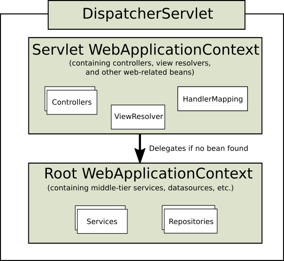

들어가며
회사 업무 중에 AOP를 이용하여 개발 중에 AOP가 제대로 설정이 되지 않는 문제가 있었다.
문제의 원인은 Component-scan 위치에 따른 Bean 생성 위치에 있었다.
core가 되는 프로젝트는 applicationContext에서 component-scan을 통해 bean을 생성 하고 있었고,
각 endpoint가 되는 프로젝트내의 패키지는 모두 servlet-context에서 component-scan을 하고 있었다.
Bean의 생성 위치 상, AOP를 적용할 수 없었기 때문에 발생한 문제 였다.
이번 기회에 Application Context와 Servlet Context의 계층을 알게 되어 나름대로 정리 해보고자 한다.
Web Application Context

Application Context
- Web Application 최상단에 위치하고 있는 Context
- Spring에서 ApplicationContext란 BeanFactory를 상속받고 있는 Context
- Spring에서 root-context.xml, applicationContext.xml 파일은 ApplicationContext 생성 시 필요한
설정정보를 담은 파일 (Bean 선언 등…) - Spring에서 생성되는Bean에 대한 IoC Container (또는 Bean Container)
- Spring에서 생성하는 모든 Bean은 Application Context에 생성된다.
- 특정 Servlet설정과 관계 없는 설정을 한다 (@Service, @Repository, @Configuration, @Component)
- 서로 다른 여러 Servlet에서 공통적으로 공유해서 사용할 수 있는 Bean을 선언한다.
- Application Context에 정의된 Bean은 Servlet Context에 정의 된 Bean을 사용할 수 없다.
Servlet-Context (servlet-context.xml)
- Servlet단위로 생성되는 context
- Spring에서 servlet context.xml 파일은 DispatcherServlet 생성 시에 필요한 설정 정보를 담은 파일
(Interceptor, Bean생성, ViewResolver등…) - URL설정이 있는 Bean을 생성 (@Controller, Interceptor)
- Application Context를 자신의 부모 Context로 사용한다.
- Application Context와 Servlet Context에 같은 id로 된 Bean이 등록 되는 경우,
Servlet Context에 선언된 Bean을 사용한다. - Bean 찾는 순서
- Servlet Context에서 먼저 찾는다.
- 만약 Servlet Context에서 bean을 못찾는 경우 Application Context에 정의된 bean을 찾는다.
- Servlet Context에 정의된 Bean은 Application Context의 Bean을 사용할 수 있다.
web.xml 설정 살펴보기
web.xml 이란
서블릿 클래스는 JSP 페이지와 달리 설치뿐만 아니라 등록을 하는 과정을 필요로 한다.
여기서 서블릿 클래스를 등록하는 곳의 이름을 Web application deployment descriptor라고 하는데 (줄여서 DD-Deployment Descriptor) 이 역할을 하는 것이 바로 web.xml이다. web.xml 파일은 웹 애플리케이션 디렉터리마다 딱 하나씩만 존재할 수 있다.
DD는 WAS 구동 시 /WEB-INF 디렉토리에 존재하는 web.xml을 읽어 웹 애플리케이션의 설정을 구성하기 위해 존재한다.
1 | <?xml version="1.0" encoding="UTF-8"?> |
그래서 Context 설정은 어떻게 쓰냐?
Spring에서 Application Context와 Servlet Context를 나누는 기준은 간단하다.
- Application Context
- 공통 기능을 할 수 있는 Bean설정 (Datasource, Service 등…)
- 각 Servlet에서 공유할 수 있는 Bean
- Servlet Context
- Servlet 구성에 필요한 Bean 설정 (Controller, Interceptor, MappingHandler등…)
가장 중요한 게 Bean을 자동으로 scan하여 생성하는 component-scan이라고 생각된다.
각 applicationContext.xml과 servletContext.xml 파일을 설정한다고 가정하면 아래와 같이 설정 할 수 있다.
ApplicationContext.xml
1 | <context:component-scan base-package="com.myapp.core, com.myapp.app"> |
Servlet-Context.xml
1 | <context:component-scan base-package="com.myapp.app" use-default-filters="false"> |
Servlet-Context.xml 설정 시, use-default-filters 속성을 false로 처리 하였다.
use-default-filters 속성은 원래 default가 true인데, @Compont Annotation(@Controller, @Service, @Repository등…) 의 클래스를 자동으로 Bean으로 등록해 주는 filter속성이다. 따라서 위의 필터를 false로 변경하고, scan할 대상에 대한 Annotation만 include-filter에 추가하였다.